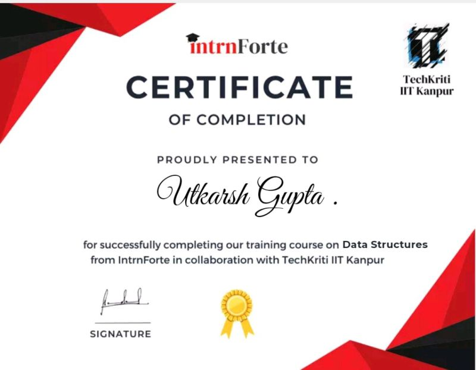

Dear Student, MICROSOFT INTERNFORTE is offering you a virtual internship gives a student the opportunity for career exploration and development, and to learn new skills. It offers the employer the opportunity to bring new ideas and energy into the workplace, develop talent and potentially build a pipeline for future full-time employees.
Enter ur name or email
Enter your password
1. Certification establishes your bonafides.
As an IT professional, your certificate proves that the work you do is part of a formal, evolved and mature industry discipline, with a structured, organised and defined approach to achieving the objectives. It shows your commitment to your role, willingness to work hard and be disciplined, and ability to handle reasonable stress. It is evidence of you being who you say you are and what you can do.
2. Certification can be an excellent introduction to a new topic.
Certification is a great tool to initiate the newcomer into a specialised branch of work and guide you to explore for details or anomalies. It provides valuable insights accumulated and collated over the years by various experienced professionals in the field, the now-popular “Body of Knowledge.”
3. Certification complements on-the-job working and training.
Are certifications necessary if one can learn the requisite skills on the job? Not strictly. However, practical skills and experience may be limited by constraints of time, budget, resources, and personal biases. When confronted with a problem, you may be aware of Solution A and Solution B and will therefore opt for one of the two. Solution C may exist, which is the best, but you may not know about it, and could be missing out. Certification can help make you aware of all options and facilitate your decision-making.
Having said all that, certification is not the panacea for the professional.
4. Certification can help you get a job, but not necessarily keep it.
While certification certainly is an attractive sign on a CV that impresses employers and recruiters, at the end of the day, it is only a string of alphabets after your name, something that many of us use as a lever to up the market price for our skills. Does a certificate effectively mean anything? Perhaps what matters more is applying the knowledge gained over the course of study and its implementation in real life. Knowing the difference between Iterative and Incremental methodologies is all very well, but unless you can judge which is the best fit in which circumstances and can decide when, why, and how each should be exploited, the knowledge is of little use.
5. Certification can teach you technical skills, but it does not excuse you from learning soft skills.
Several certifications are hampered by lack of detail on the behavioural aspects of the job. To be an effective project manager, one needs to have tact, persuasion and negotiation skills, conflict resolution ability, etc. However, while the certificate exam on project management will explain at length about scheduling and estimation and risks and dependencies, it will seldom address these “soft” areas of the job.

6. Certification should make you neither a bull nor a sheep.
Bearing a certificate of validation by an international authority in your area of work does not mean that you are superior to others in any way. It does mean that you have undertaken to study a particular branch of your field in a prescribed and recommended fashion and sequence that is known to lead to certain desirable and known results, and that may be used as a structured method to develop expertise in the area.
At the same time, having a certification also does not mean you kow-tow to a particular school of thought and deserve to be mocked or ridiculed by those who don’t believe in you
7. Certification can be costly and not just in terms of money.
There is the obvious cost involved in taking the examinations. Occasionally, however, certifications can end up being a millstone around the neck. People who are not familiar with what that certification implies can easily take it for granted that the certificate-bearer is the ultimate expert in the field. The fallout of this can be unpleasant. You might be expected to know “everything”. You might be held responsible for business impact outside your control. You might be expected to have all the answers. The responsibility can lie heavy.
8. Certification is not for life.
Many certifications are valid only for a limited time, which means that the competency of the certificate-bearer becomes time-boxed. Keeping the certification active involves re-taking the examinations at additional, often recurring, costs. While this makes sense to a certain extent in a dynamic industry like IT, which evolves every six months, it can also be perceived as a money-making enterprise from the side of the certification-grating authority. It is therefore important to choose your certification with due diligence.